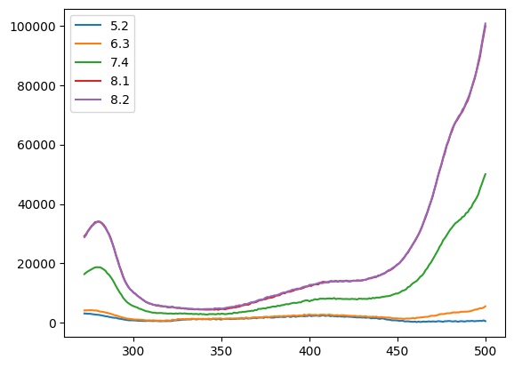
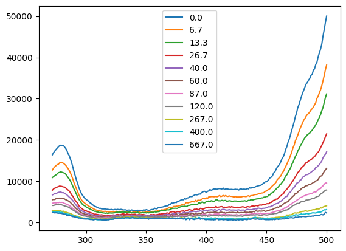
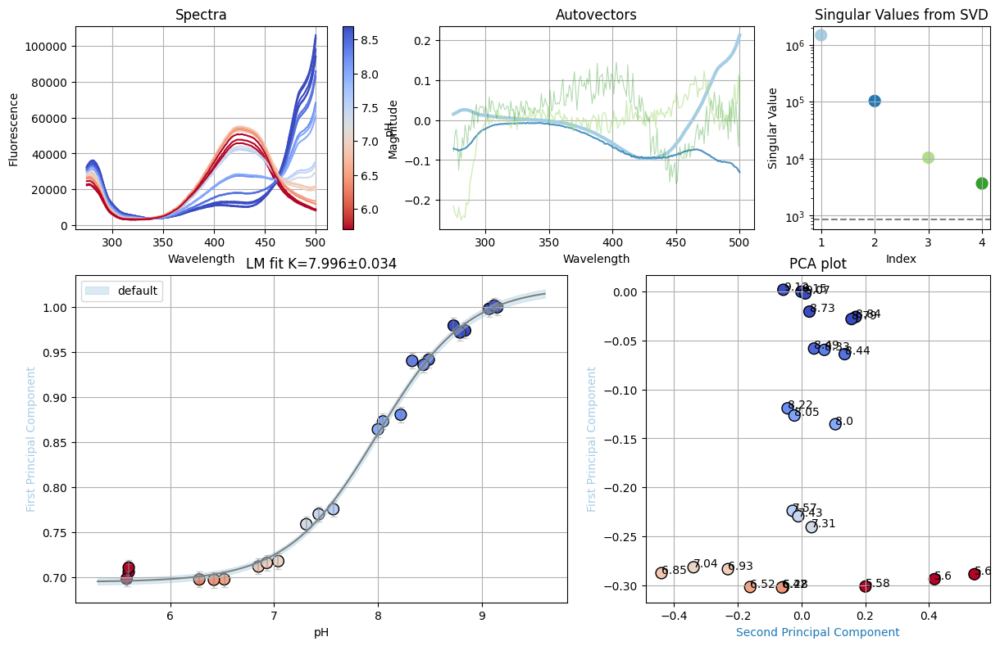
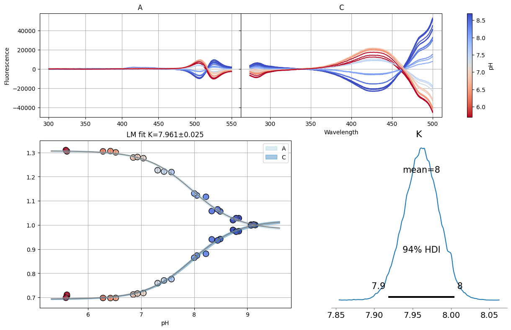
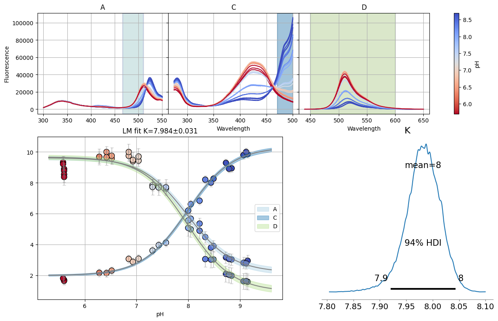
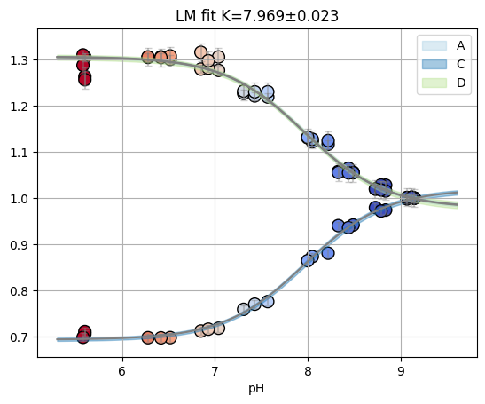
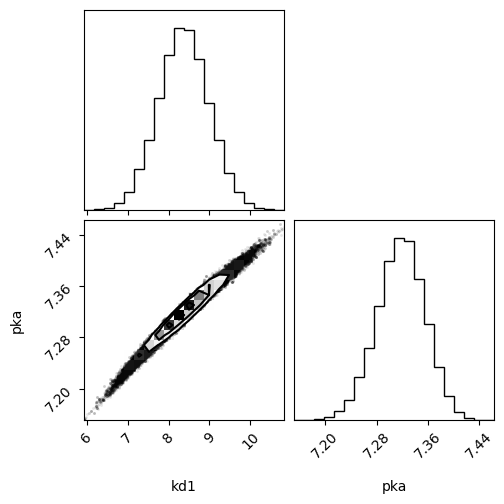

3. Getting started with prenspire#
[1]:
import random
from pathlib import Path
import lmfit
import matplotlib.pyplot as plt
import numpy as np
from clophfit import prenspire
from clophfit.binding.fitting import (
Dataset,
analyze_spectra,
analyze_spectra_glob,
fit_binding_glob,
)
from clophfit.binding.plotting import plot_emcee
%load_ext autoreload
%autoreload 2
tpath = Path("../../tests/EnSpire")
[2]:
ef1 = prenspire.EnspireFile(tpath / "h148g-spettroC.csv")
ef2 = prenspire.EnspireFile(tpath / "e2-T-without_sample_column.csv")
ef3 = prenspire.EnspireFile(tpath / "24well_clop0_95.csv")
[3]:
ef3.wells, ef3._wells_platemap, ef3._platemap
[3]:
(['A03', 'A04', 'A05', 'A06', 'B01', 'B02', 'C01', 'C02', 'C03'],
['A03', 'A04', 'A05', 'A06', 'B01', 'B02', 'C01', 'C02', 'C03'],
[['A', ' ', ' ', '- ', '- ', '- ', '- '],
['B', '- ', '- ', ' ', ' ', ' ', ' '],
['C', '- ', '- ', '- ', ' ', ' ', ' '],
['D', ' ', ' ', ' ', ' ', ' ', ' ']])
[4]:
ef1.__dict__.keys()
[4]:
dict_keys(['file', 'verbose', 'metadata', 'measurements', 'wells', '_ini', '_fin', '_wells_platemap', '_platemap'])
[5]:
ef1.measurements.keys(), ef2.measurements.keys()
[5]:
(dict_keys(['A']), dict_keys(['B', 'A', 'C', 'D', 'E', 'F', 'G', 'H']))
when testing each spectra for the presence of a single wavelength in the appropriate monochromator
[6]:
ef2.measurements["A"]["metadata"]
[6]:
{'temp': '25',
'Monochromator': 'Excitation',
'Min wavelength': '400',
'Max wavelength': '510',
'Wavelength': '530',
'Using of excitation filter': 'Top',
'Measurement height': '8.9',
'Number of flashes': '50',
'Number of flashes integrated': '50',
'Flash power': '100'}
[7]:
ef2.measurements["A"].keys()
[7]:
dict_keys(['metadata', 'lambda', 'F01', 'F02', 'F03', 'F04', 'F05', 'F06', 'F07'])
[8]:
random.seed(11)
random.sample(ef1.measurements["A"]["F01"], 7)
[8]:
[2163.0, 607.0, 1846.0, 517.0, 572.0, 2145.0, 2028.0]
[9]:
fp = tpath / "h148g-spettroC-nota.csv"
n1 = prenspire.Note(fp, verbose=1)
n1._note.set_index("Well").loc["A01", ["Name", "Temp"]]
Wells ['A01', 'A02']...['G04', 'G05'] generated.
[9]:
Name H148G
Temp 20.0
Name: A01, dtype: object
[10]:
n1.__dict__.keys()
[10]:
dict_keys(['fpath', 'verbose', 'wells', '_note', 'titrations'])
[11]:
n1.wells == ef1.wells, n1.wells == ef2.wells
[11]:
(True, False)
[12]:
n1.build_titrations(ef1)
tit0 = n1.titrations["H148G"][20.0]["Cl_0.0"]["A"]
tit3 = n1.titrations["H148G"][20.0]["pH_7.4"]["A"]
tit0
[12]:
| 5.2 | 6.3 | 7.4 | 8.1 | 8.2 | |
|---|---|---|---|---|---|
| 272.0 | 3151.0 | 4181.0 | 16413.0 | 29192.0 | 28816.0 |
| 273.0 | 3130.0 | 4204.0 | 16926.0 | 29909.0 | 29545.0 |
| 274.0 | 3043.0 | 4232.0 | 17331.0 | 30900.0 | 30750.0 |
| 275.0 | 3079.0 | 4283.0 | 17680.0 | 31717.0 | 31547.0 |
| 276.0 | 2975.0 | 4264.0 | 18020.0 | 32564.0 | 32336.0 |
| ... | ... | ... | ... | ... | ... |
| 496.0 | 636.0 | 4689.0 | 43230.0 | 87203.0 | 87842.0 |
| 497.0 | 683.0 | 4923.0 | 45173.0 | 89719.0 | 90666.0 |
| 498.0 | 632.0 | 4900.0 | 46725.0 | 93452.0 | 94101.0 |
| 499.0 | 854.0 | 5140.0 | 48452.0 | 96643.0 | 97506.0 |
| 500.0 | 573.0 | 5573.0 | 50025.0 | 99847.0 | 100715.0 |
229 rows × 5 columns
[13]:
tit0.plot()
tit3.plot()
[13]:
<Axes: >


[14]:
ef = prenspire.EnspireFile(tpath / "G10.csv")
fp = tpath / "NTT-G10_note.csv"
nn = prenspire.Note(fp, verbose=1)
nn.build_titrations(ef)
spectra = nn.titrations["NTT-G10"][20.0]["Cl_0.0"]["C"]
Wells ['D01', 'D02']...['G07', 'G08'] generated.
[15]:
f_res = analyze_spectra(spectra, is_ph=True, band=None)
print(f_res.result.chisqr)
plt.show()
f_res.figure
24.000000000000046
[15]:

[16]:
def dataset_from_lres(lkey, lres, is_ph):
x, y = {}, {}
for k, res in zip(lkey, lres):
x[k] = res.mini.userargs[0]["default"].x
y[k] = res.mini.userargs[0]["default"].y
return Dataset(x, y, is_ph)
spectra_A = nn.titrations["NTT-G10"][20.0]["Cl_0.0"]["A"]
spectra_C = nn.titrations["NTT-G10"][20.0]["Cl_0.0"]["C"]
spectra_D = nn.titrations["NTT-G10"][20.0]["Cl_0.0"]["D"]
resA = analyze_spectra(spectra_A, "pH", (466, 510))
resC = analyze_spectra(spectra_C, "pH", (470, 500))
resD = analyze_spectra(spectra_D, "pH", (450, 600))
ds_bands = dataset_from_lres(["A", "C", "D"], [resA, resC, resD], True)
resA = analyze_spectra(spectra_A, "pH")
resC = analyze_spectra(spectra_C, "pH")
resD = analyze_spectra(spectra_D, "pH")
ds_svd = dataset_from_lres(["A", "C", "D"], [resA, resC, resD], True)
[17]:
dbands = {"D": (466, 510)}
tit = nn.titrations["NTT-G10"][20.0]["Cl_0.0"]
sgres = analyze_spectra_glob(tit, ds_svd, dbands)
sgres.svd.figure
sgres.gsvd.figure
100%|██████████████████████████████████████████████████████████████████████████████████████████████████████████████████████████████████████████████████████| 1800/1800 [00:18<00:00, 97.86it/s]
The chain is shorter than 50 times the integrated autocorrelation time for 5 parameter(s). Use this estimate with caution and run a longer chain!
N/50 = 36;
tau: [54.0759028 47.01313848 54.99540025 44.43316404 40.93936786]
[17]:

[18]:
dbands = {"A": (466, 510), "C": (470, 500), "D": (450, 600)}
sgres = analyze_spectra_glob(nn.titrations["NTT-G10"][20.0]["Cl_0.0"], ds_bands, dbands)
sgres.bands.figure
100%|██████████████████████████████████████████████████████████████████████████████████████████████████████████████████████████████████████████████████████| 1800/1800 [00:21<00:00, 85.41it/s]
The chain is shorter than 50 times the integrated autocorrelation time for 7 parameter(s). Use this estimate with caution and run a longer chain!
N/50 = 36;
tau: [79.28631938 53.77383936 76.65253672 60.96310711 73.37573696 56.61336481
63.09191874]
[18]:

[19]:
ci = lmfit.conf_interval(sgres.bands.mini, sgres.bands.result)
print(lmfit.ci_report(ci, ndigits=2, with_offset=False))
99.73% 95.45% 68.27% _BEST_ 68.27% 95.45% 99.73%
S0_A: 1.65 1.84 2.02 2.20 2.37 2.54 2.72
S1_A: 9.23 9.37 9.50 9.63 9.76 9.89 10.03
S0_C: 9.90 10.05 10.19 10.33 10.47 10.62 10.79
S1_C: 1.70 1.81 1.91 2.00 2.10 2.19 2.29
S0_D: 0.21 0.47 0.72 0.96 1.19 1.42 1.67
S1_D: 9.12 9.31 9.50 9.68 9.85 10.04 10.23
K : 7.89 7.92 7.95 7.98 8.02 8.05 8.08
[20]:
res = fit_binding_glob(ds_svd, True)
res.figure
[20]:

[21]:
xx = np.array([5.2, 6.3, 7.4, 8.1, 8.2])
yy = np.array([6.05, 12.2, 20.38, 48.2, 80.3])
def kd(x, kd1, pka):
return kd1 * (1 + 10 ** (pka - x)) / 10 ** (pka - x)
model = lmfit.Model(kd)
params = lmfit.Parameters()
params.add("kd1", value=10.0)
params.add("pka", value=6.6)
result = model.fit(yy, params, x=xx)
result_emcee = result.emcee(steps=1800, burn=150)
fig = plot_emcee(result_emcee.flatchain)
100%|█████████████████████████████████████████████████████████████████████████████████████████████████████████████████████████████████████████████████████| 1800/1800 [00:15<00:00, 118.87it/s]
[21]:
(<Figure size 550x550 with 4 Axes>, [])
